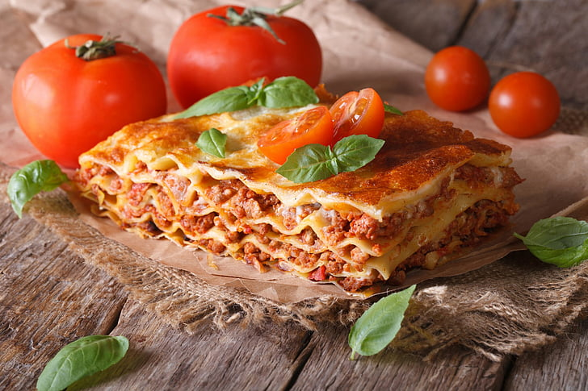

Lasagna recipe

Decription:
Delight in the comforting layers of flavor and richness as we dive
into the world of lasagna, a culinary masterpiece that
embodies the essence of homely indulgence. Rooted in Italian tradition,
lasagna has become a global favorite, celebrated for its hearty composition
and ability to evoke a sense of warmth and satisfaction. In this recipe,
we present the classic Beef and Cheese Lasagna, inviting you to embrace
the art of layering and the tantalizing aromas that waft through the kitchen.
Let's embark on a culinary adventure that promises to bring both
joy and satisfaction to your dining table.
Ingredients:
- 1 pound ground beef
- 1 onion, finely chopped
- 3 cloves garlic, minced
- 1 can (28 ounces) crushed tomatoes
- 2 cans (6 ounces each) tomato paste
- 1/2 cup fresh basil, chopped
- Salt and pepper to taste
- 9 lasagna noodles, cooked al dente
- 3 cups ricotta cheese
- 1 cup grated Parmesan cheese
Steps you need to follow:
- Preheat your oven to 375°F (190°C).
- In a large skillet over medium heat, brown the ground beef.
Add chopped onions and garlic, cooking until softened.
- Stir in crushed tomatoes, tomato paste, fresh basil, dried oregano, salt, and pepper
- In a separate bowl, combine ricotta, mozzarella, and Parmesan cheeses.
- Cover the baking dish with aluminum foil and bake for 25-30 minutes.